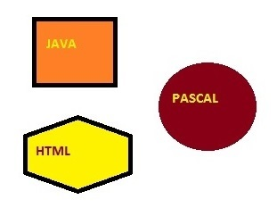
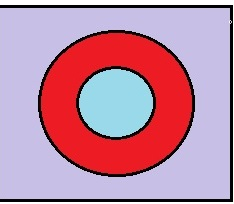
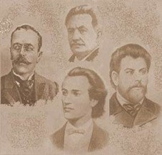

Portofoliu la CSW
Navigare ▼
CV
Examene BAC
Lista Bagaje
Tabele
7 Minuni
Harti de imagini
Harta Moldovei pe Raioane
Formulare
Multimedia in HTML
Galerie de Imagini - Cele 7 Minuni
Harti de Imagini si navigare grafica
Exemplu de harta-imagine - Exercitiul 1:

Doar coroana circulara este zona activa - Exercitiul 2:

Scriitori Romani - Exercitiul 3:
